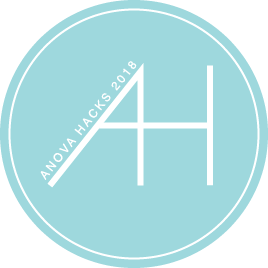
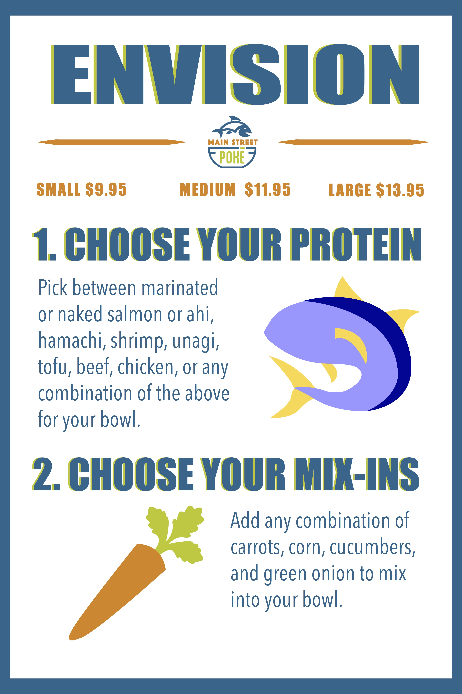
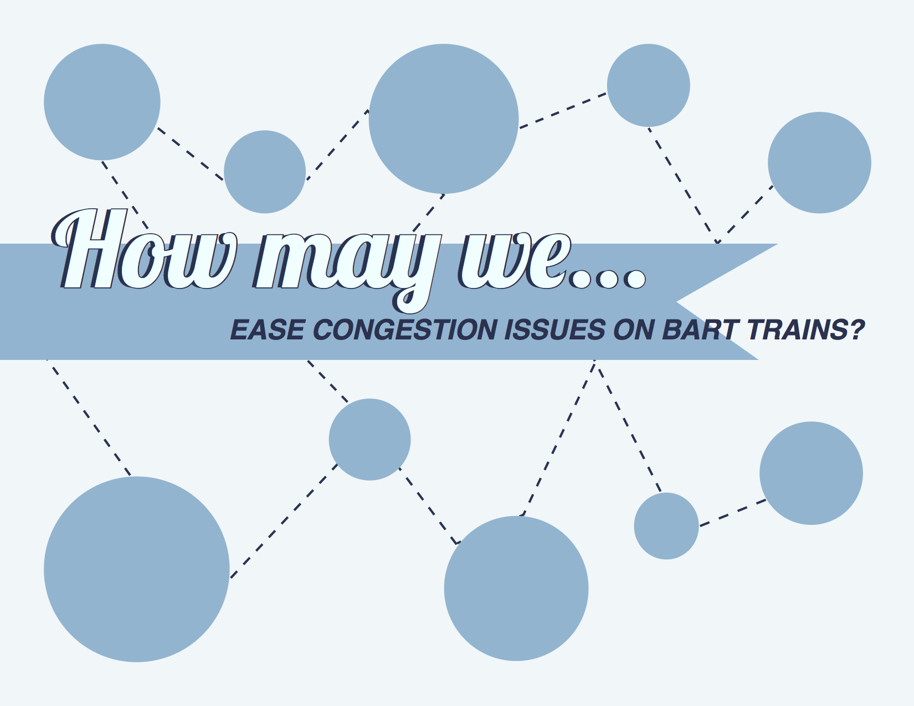
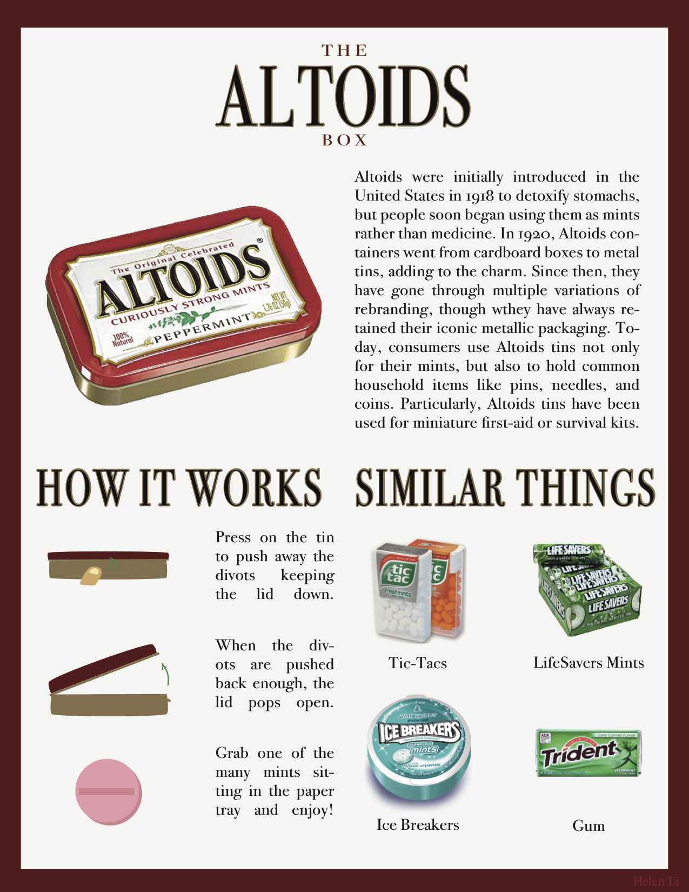
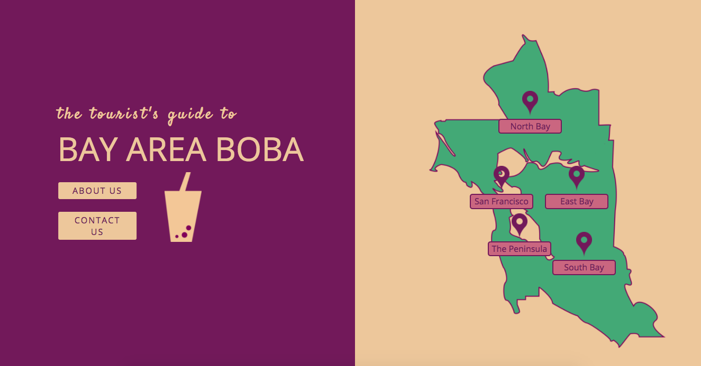
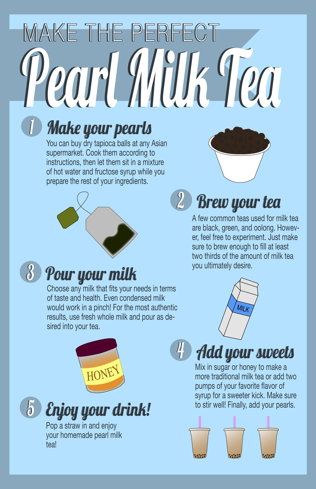

2018 ANova Hacks
For the 2018 ANova Hacks, I worked closely with other committees on projects such as designing sponsorship flyers, creating hackathon logos, and even making stickers and t-shirts to distribute to our students. The flyer was created in Adobe InDesign, and the logo, stickers, and t-shirt designs were made in Adobe Illustrator.

Main Street Poké Menu Design
I worked closely with the owner of Main Street Poké, a small casual restaurant in Indiana, to design its menus so that customers unfamiliar with the food would have a clear understanding of how to order their meals. All menu designs were made in Adobe Illustrator.

Spring 2018 ANova Recruitment
Recruiting for Berkeley ANova began in the winter, and I worked on various assets that would eventually be used to rebrand the student organization so that it evoked more professionalism. Specifically, I designed the flyers, banners, and several shirts for the officer team and general members. The flyers and banners were made in Adobe InDesign, and the shirt designs were created in Adobe Illustrator.

"How May We" Design Project
When given the assignment to address a "How May We..." problem regarding the BART system, I focused on easing congestion on trains. I researched the problem, conducted interviews, ideated with other students in the class, and finally designed a system I entitled "Stackable Folding Chairs" to potentially give more standing room during rush hours. I finished my design and presented it using Adobe InDesign.

"Intimate Object" ReDesign Project
This project involved choosing an object I was closely intimate with and redesigning it, preferably with new factors inspired by unlikely sources. I chose an Altoids box, which I first closely researched in terms of branding and style before redesigning the container itself. The work was completed using Adobe InDesign.

Web Design Final Project
In a web design project in which free reign was encouraged, I designed a website about the popular drink, pearl milk tea, using HTML/CSS and Java. After submitting the project, several of my friends requested links as well as updates to fulfill their boba needs.

Illustrator Infographic
My very first graphic design class's midterm project was to create a detailed infographic using Adobe Illustrator. I not only heavily explored font and text styles, but also experimented with layout and color scheme.